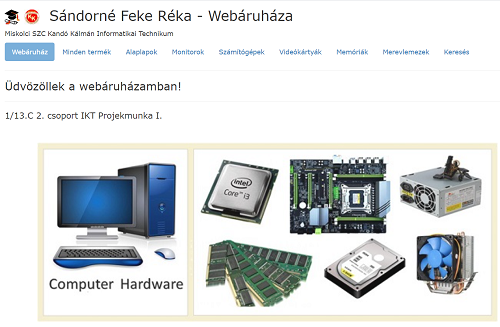

Miskolci SZC Kandó Kálmán Informatikai Technikum
|
3.5.1 IKT projektmunka I. 3.5.1.6 A tantárgy témakörei
Gyakorlati feladatok:
|
 |
(Tankönyvek, jegyzetek, videók.)
| 1 | Szabványkövető statikus honlapok szerkesztése HTML5 + CSS3 + SVG 2 | megtekintem |
| 2 | Verók Attila - IKT projektmenedzsment I. | megtekintem |
| 3 | Szoftverfejlesztési módszertanok / Agilis módszertanok / SCRUM | megtekintés |
| 4 | Git Alapismeretek - "SanFranciscobol Jottem" - videók | megtekintés |
| 5 | Kanban és Scrum mindkettőből a legjobbat | megtekintés |
| 6 | Hugyák Tamás - Git verziókezelő | megtekintés |
| 7 | Prezentációs készség fejlesztése | megtekintés |
| 8 | Hogyan lesz valaki jó előadó és mi a sikeres prezentáció titka? - videó | megtekintés |
| 9 | Németh Zoltán - A tökéletes prezentáció (Mindenki Akadémiája) - videó | megtekintés |
| 10 | Konfliktuskezelés - Snír Péter - videó | megtekintés |